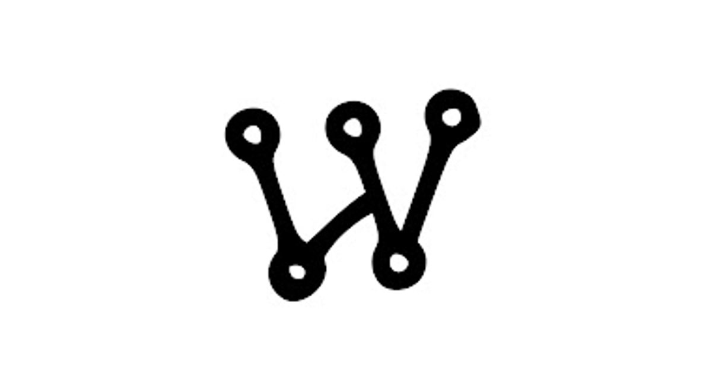
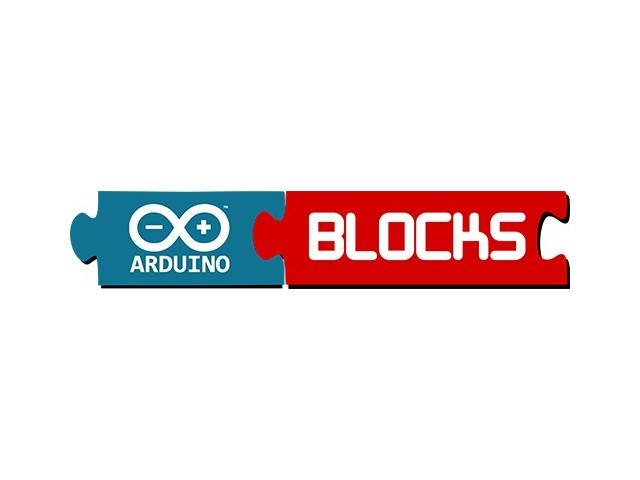
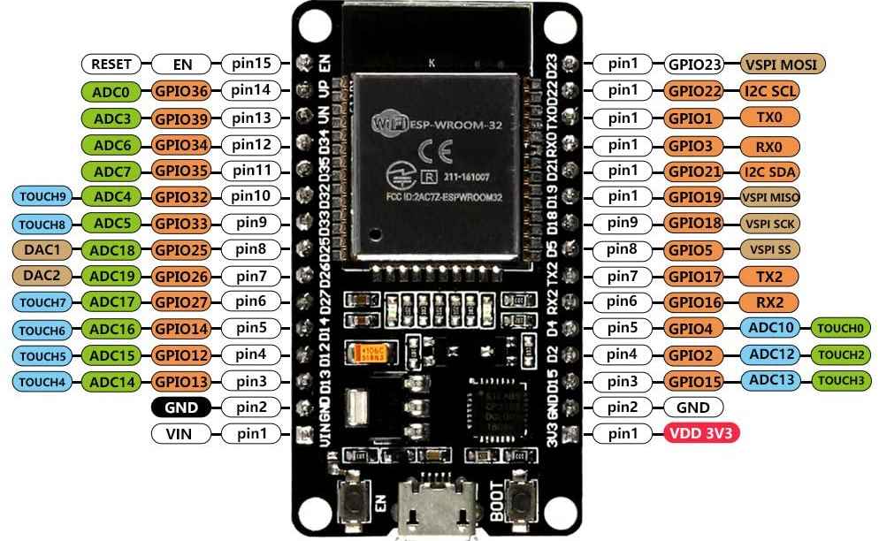

Arduino IDE
El Arduino IDE es un entorno de desarrollo basado en C/C++ diseñado para programar placas como Arduino Uno, Nano, Mega y microcontroladores como el ESP32. Permite escribir, compilar y cargar código directamente a la placa mediante USB. Gracias a su interfaz intuitiva y soporte multiplataforma, es ampliamente usado en educación, prototipado y automatización. Dispone de una comunidad activa, librerías, ejemplos y documentación que facilitan el desarrollo ágil de proyectos tecnológicos.

Simulador Wokwi
Wokwi es una plataforma online de simulación de circuitos que permite programar microcontroladores como Arduino, ESP32 y ATtiny sin hardware físico. Ideal para pruebas y depuración, permite cargar código compatible con el Arduino IDE, facilitando la transición al entorno real. Su interfaz gráfica permite arrastrar y conectar componentes como sensores, pantallas o motores. Accesible desde cualquier navegador, es una herramienta clave en la enseñanza de electrónica y robótica.

Arduinoblocks
Arduinoblocks es una plataforma de programación visual por bloques, similar a Scratch, que permite generar código para placas Arduino sin necesidad de escribirlo manualmente. Diseñada para entornos educativos, facilita el aprendizaje de la lógica computacional mediante bloques como “encender LED” o “esperar 2 segundos”, que se traducen automáticamente a código en lenguaje Arduino. Este entorno promueve una transición progresiva hacia la programación textual, ya que permite exportar el código generado y usarlo directamente en el Arduino IDE.

MIT App nventor
App Inventor es una plataforma de desarrollo visual inicialmente creada por Google y actualmente mantenida por el Instituto Tecnológico de Massachusetts (MIT). Está orientada al diseño y programación de aplicaciones móviles para dispositivos Android, mediante un entorno de bloques que simplifica la construcción de lógica computacional sin requerir conocimientos avanzados en lenguajes de programación.
La interfaz permite arrastrar y configurar componentes visuales —como botones, campos de texto, sensores y conectividad Bluetooth—, para luego asignarles comportamientos mediante bloques lógicos que representan estructuras condicionales, eventos y acciones.
Debido a su enfoque intuitivo, App Inventor se ha consolidado como una herramienta pedagógica eficaz en contextos educativos, al facilitar el desarrollo de competencias digitales, fomentar la resolución de problemas y estimular la creatividad mediante la creación de aplicaciones funcionales que pueden ejecutarse directamente en dispositivos Android.

Placa de Programación-ESP32
Es una placa de desarrollo basada en el microcontrolador ESP32, diseñado por Espressif Systems, que se caracteriza por incorporar de forma nativa conectividad WiFi y Bluetooth, lo que permite establecer comunicaciones inalámbricas sin requerir módulos externos. Dispone de múltiples pines GPIO (entradas/salidas digitales), lo que la hace especialmente adecuada para aplicaciones en domótica, Internet de las Cosas (IoT), robótica y sistemas de automatización, facilitando la integración eficiente de sensores, actuadores y periféricos.

| Categoría | Pines comunes | Uso principal |
| Alimentación | 3V3, VIN, GND | Para alimentar la placa o sensores. |
| Digitales (GPIO) | GPIO 0–39 (excepto 6–11) | Entrada/salida digital. Control de LEDs, relés, botones, etc. |
| Analógicos (ADC) | Analógicos (ADC) GPIO 32, 33, 34, 35, 36, 39 |
Leer señales analógicas (como sensores de temperatura o luz). |
| PWM | Casi todos los GPIO | Control de brillo de LEDs, velocidad de motores. |
| UART (Serial) | GPIO 1 (TX), GPIO 3 (RX) | Comunicación con el PC o módulos como Bluetooth, GPS. |
| I2C | GPIO 21 (SDA), GPIO 22 (SCL) | Comunicación con sensores como acelerómetros o pantallas OLED. |
| SPI | GPIO 23 (MOSI), 19 (MISO), 18 (SCK), 5 (CS) | Comunicación rápida con módulos como pantallas TFT o memorias. |
| Solo entrada | GPIO 34, 35, 36, 39 | Pines que solo pueden usarse como entrada. |
| Reservados (no usar) | GPIO 6–11 | Usados por la memoria interna del ESP32, no conectarlos. |